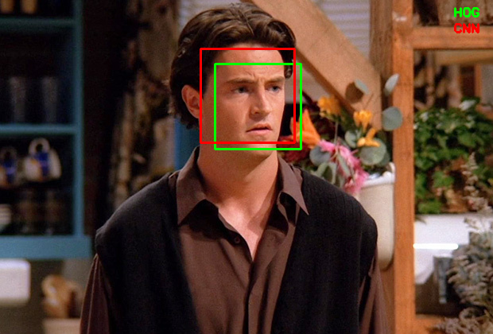

CNN based face detector from dlib

Image Source: Google Images
If you are into any sort of image processing, computer vision or machine learning, chances are high that you might have come across/used dlib somewhere in your journey.
According to dlib’s github page, dlib is a toolkit for making real world machine learning and data analysis applications in C++. While the library is originally written in C++, it has good, easy to use Python bindings.
I have majorly used dlib for face detection and facial landmark detection. The frontal face detector in dlib works really well. It is simple and just works out of the box.
This detector is based on histogram of oriented gradients (HOG) and linear SVM. (Explaining how this detector works is beyond the scope of this blog post. Probably a topic to discuss for another day)
While the HOG+SVM based face detector has been around for a while and has gathered a good amount of users, I am not sure how many of us noticed the CNN (Convolutional Neural Network) based face detector available in dlib. Honestly, I didn’t. I accidentally came across it while browsing through dlib’s github repository.
My immediate thoughts were like,
“Wow. Is it better than the existing detector ? How accurate it is ? Can it detect the face in all angles ? Can it run on real-time video ?”
Well, that’s what this post is all about. Trying to find out the answers for the above questions.
. . .
If you have ever used the HOG based face detector in dlib, you probably know that it will not detect faces at odd angles. It is meant to be a good "frontal" face detector and it is, indeed.
It detects faces even when they are not perfectly frontal to a good extend. Which is really good for a frontal face detector. But you can only expect so much from it.
Meanwhile, the CNN based detector is capable of detecting faces almost in all angles. Unfortunately it is not suitable for real time video. It is meant to be executed on a GPU. To get the same speed as the HOG based detector you might need to run on a powerful Nvidia GPU.
Nevertheless, this should not stop us from trying it on images.
In the remainder of this post, I am going to show you how you can use the CNN based face detector from dlib on images and compare the results with HOG based detector with ready to use Python code.
Let’s jump right in and start coding.
Getting started
Let’s start by importing the necessary packages. If you have not installed these packages, you can install them by typing the below command in the Terminal.
pip install opencv-python dlib argparse time
(argparse and time are more likely to come pre-installed with Python)
If you are not using virtual environment for Python, I highly recommend to start using it. You can checkout my previous post if you need a starting point.
Command line arguments
This script requires two command line arguments.
- input image
- model weights
You can get the model weights file by typing the below command in Terminal.
wget http://arunponnusamy.com/files/mmod_human_face_detector.dat
By default the code looks for the model file in the current directory if you don’t provide any specific path.
For example, you can run by typing
python cnn-face-detector-dlib.py -i input.jpg
(This will work if both the input.jpg and model weights file are in the current directory same as the python script)
Or you can run by typing,
python cnn-face-detector-dlib.py -i path-to-input-image -w path-to-weights-file
(python cnn-face-detector-dlib.py -i ~/Downloads/input.jpg -w ~/Downloads/mmod_human_face_detector.dat)
(I assume you have the latest version of Python installed. Must be 3.0+)
Initialization
Read the input image provided and check whether its of type None. If so print the error statement and exit the program.
Initialize the HOG based and CNN based face detectors which we will be applying on the input image.
For the HOG based one we don’t need to provide any file to initialize. It is pre-built inside dlib. Just calling the method should be enough.
For the CNN based one, we need to provide the weights file to initialize with.
Applying HOG face detection
Let’s apply the detector on the input image.
faces_hog = hog_face_detector(image, 1)
1 is the number of times it should upsample the image. By default, 1 works for most cases. (Upsampling the image helps to detect smaller faces)
time.time() can be used to measure the execution time in seconds.
Once the detection is done, we can loop over the detected face(s). To draw box over the detected faces, we need to provide (x,y) — top left corner and (x+w, y+h) — bottom right corner to OpenCV.
Rectangle format in dlib and OpenCV are a bit different. We can use skimage here to directly overlay the dlib rectangle object on the image. But getting familiar with the conversion between dlib and OpenCV will be helpful when we are processing real time video with OpenCV.
cv2.rectangle(image, (x,y), (x+w,y+h), (0,255,0), 2)
The above line will draw a rectangle on the detected face on the input image. (0,255,0) represents the color of the box in BGR order (green in this case). 2 represents the thickness of the line.
Applying CNN face detection
The process is almost same as the previous detector except the returned rectangle object by the detector. Let’s use color red for CNN detected faces to differentiate from HOG.
Display results
To differentiate the detections from HOG and CNN detectors, lets’s write which color is which at the top right corner of the image.
cv2.imshow() will display the output image when you run the script.
cv2.waitKey() specifies how long the display window should wait before closing. For example cv2.waitKey(500) will display the window for 500ms(0.5 sec). If you don’t pass any number it will wait until you press any key.
cv2.imwrite() will save the output image to disk.
It’s a good practice to release all the windows once we are done with the display.
Download the complete source code for this post using the form below.
Execution time
To give you an idea of the execution time, for a 620x420 image , HOG takes around 0.2 seconds whereas CNN takes around 3.3 seconds on CPU (Intel i5 Dual core 1.8GHz).

Execution time on CPU (in seconds)
The exact number might vary depending on your hardware setup and the size of the image. The bottom line is HOG takes less than a second whereas CNN takes few seconds on CPU.
Detecting faces at odd angles
Here comes the important part.
Can the CNN based detector detect faces at odd angles (read non-frontal) which the HOG based detector might fail to detect?
Well, the answer is “almost”. ( I have not tested it rigorously to give a confident “yes”. But as far as I have tested, it is working really well for non-frontal images).
Let’s look at some of the examples where HOG based detector fails but CNN is able to detect.


and the list goes on.
This is not to say that HOG based detector doesn’t work at all for non-frontal images. In fact it does detect some of the non-frontal images such as below.


All the images above are taken from Google Images. I do not own the copyright.
Summary
In this post we looked at the lesser known CNN based face detector from dlib and compared the output with the widely used HOG+SVM based face detector.
We observed that the CNN based detector works really well for non-frontal faces at odd angles where HOG based detector struggles.
Unfortunately, CNN based detector is computationally heavy and is not suitable for real-time video at the moment. If you have noticed the detector function call ( dlib.cnn_face_detection_model_v1() ) it says v1 which is version 1. Which means there is a high chance that the author might come up with the next version which is light weight and can be used for real-time applications.
Let’s hope for a light weight version in the next release of dlib.
Well, that’s all for now. Feel free to share your thoughts in the comments below or you can reach out to me on twitter at @ponnusamy_arun .
If you are getting value out of my work, consider supporting me on Patreon and unlock exclusive benefits.
Cheers.
Update :
If you are concerned about real time performance, checkout the face detector available in cvlib. It detects faces in (almost) all angles and is capable of processing real time input.
Subscribe to newsletter
If you are finding this blog interesting, consider subscribing to the newsletter to get notified when new posts go live. (Don't worry, I publish only one or two posts per month)